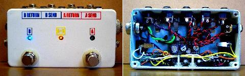
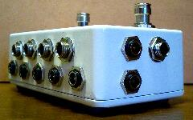
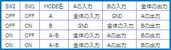
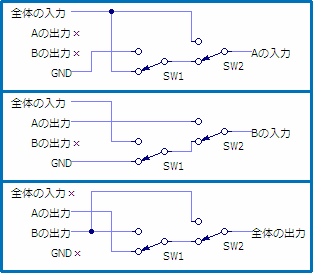
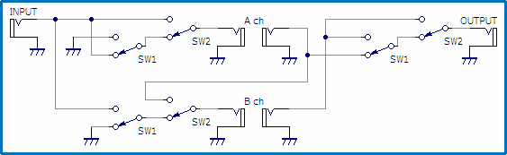
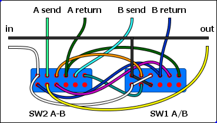

直列可2ループボックス+パワーサプライ
2009年12月06日 カテゴリー：自作エフェクター（アナログ）

以前2ループの切替を行うスイッチボックスを作ったのですが、ループ同士の直列接続をやってみたくて作りなおしました。左側のスイッチ（SW1）はA/Bループの切替、右側のスイッチ（SW2）はA/Bどちらの状態でもA→Bの直列になるというものです。横から見ると下写真のようになっています。AAサイズのケースは高さがあるのでコネクターをたくさん配置できて便利です。

設計の詳細については一庵堂の「Design your own loop box」というページをご覧ください。
今回のスイッチボックスの機能を下の表にまとめます。

バイパス機能をつけることも可能ですが、操作性が悪くなるのでやめておきました。念のため使わない入力はGNDに落とすことにしています。
Aの入力、Bの入力、全体の出力について、具体的に回路をどうすればよいか考えていきます。今回は下図のようになります。

これを一枚の回路図にまとめます。

ついでに配線図は↓です。Garrettaudioの4PDTスイッチ（イタリア製）を使いました。LEDの配線は省略してあります。実際はA/B切り替え時に赤と青のLEDが切り替わり、直列時には真ん中の黄色いLEDが点灯するようにしています。

パワーサプライにはLM317を二つ使っています。片方を9V、もう片方は12Vなんてことも一応可能にしてみました。回路等に関してはWanderlustのPower Junctionをご参照ください。LM317はケースに密着させていますが、ケースがどの程度放熱効果があるのか不明なので、電流はそれぞれ最大0.5Aぐらいまでとしていた方がよさそうです。